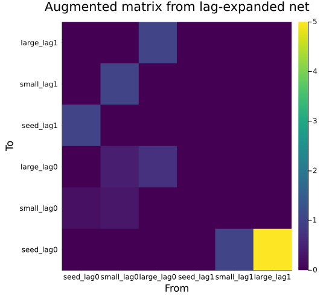

Time-Lagged Categorical Projection Models
Simon Frost
Overview
Time-lagged population models arise when demographic processes depend on the population state at earlier time steps — for example, when fecundity depends on the size an individual achieved one or more years before reproduction. The categorical framework provides a functorial expansion of projection nets with time-delay structure: each state $s$ becomes $L+1$ copies $s_{\text{lag}0}, s_{\text{lag}1}, \ldots, s_{\text{lag}L}$, transitions are placed at their assigned lag offsets, and identity shift transitions are added on the sub-diagonal. This is the delay endofunctor $S \to S \times \{0, \ldots, L\}$.
When materialized to a matrix, the expanded net produces the same augmented block structure as the direct matrix approach (Kuss et al. 2008):
\[\mathbf{A}_{\text{aug}} = \begin{bmatrix} \mathbf{U} & \mathbf{F} \\ \mathbf{I} & \mathbf{0} \end{bmatrix}\]
Setup
using CategoricalPopulationDynamics
using Catlab
using Catlab.CategoricalAlgebra
using LinearAlgebra
using StructuredPopulationCore: lambda, expand_lag_matrix, TimeLagStructure
using PlotsLabelledProjectionNet Expansion
A Simple 1-State Net
Start with a minimal projection net: one state with survival/growth and fecundity transitions.
net = LabelledProjectionNet([:size],
:survival_growth => (:size => :size),
:fecundity => (:size => :size))
println("Original: ", n_states(net), " state(s), ", n_transitions(net), " transition(s)")
println("States: ", sname(net))
println("Transitions: ", tname(net))Original: 1 state(s), 2 transition(s)
States: [:size]
Transitions: [:survival_growth, :fecundity]Lag Expansion
The lag_expand function takes a net and a dictionary mapping transition names to their lag offsets. Here, fecundity depends on the state one time step in the past:
lag_net = lag_expand(net, Dict(:fecundity => 1))
println("Expanded: ", n_states(lag_net), " state(s), ", n_transitions(lag_net), " transition(s)")
println("States: ", sname(lag_net))
println("Transitions: ", tname(lag_net))Expanded: 2 state(s), 3 transition(s)
States: [:size_lag0, :size_lag1]
Transitions: [:survival_growth_lag0, :fecundity_lag1, :shift_size_lag0_to_1]The expansion produces:
- States:
size_lag0(current) andsize_lag1(previous time step) - Transitions:
survival_growth_lag0(acts on lag-0 state),fecundity_lag1(acts on lag-1 state), andshift_size_lag0_to_1(identity shift from current to history)
ValuedProjectionNet Expansion
A 3-Stage Model
Now consider a valued net with survival and fecundity transitions carrying numeric data:
vnet = ValuedProjectionNet([:seed, :small, :large],
:survival => [(:seed => :small) => 0.2, (:small => :large) => 0.4,
(:small => :small) => 0.3, (:large => :large) => 0.7],
:fecundity => [(:large => :seed) => 5.0, (:small => :seed) => 1.0])
A_std = to_matrix(vnet)
println("Standard matrix size: ", size(A_std))
println("Standard λ = ", round(lambda(A_std), digits=4))Standard matrix size: (3, 3)
Standard λ = 1.1787Lag-Expanding the Valued Net
The lag_expand function preserves transition values while expanding the state space:
vnet_lag = lag_expand(vnet, Dict(:fecundity => 1))
println("Expanded stages: ", stage_names(vnet_lag))Expanded stages: [:seed_lag0, :small_lag0, :large_lag0, :seed_lag1, :small_lag1, :large_lag1]Augmented Matrix
The to_matrix function on the expanded net produces the $(L+1)n \times (L+1)n$ augmented projection matrix:
A_lag = to_matrix(vnet_lag)
println("Augmented matrix size: ", size(A_lag))Augmented matrix size: (6, 6)labels = String.(stage_names(vnet_lag))
heatmap(labels, labels, A_lag,
title="Augmented matrix from lag-expanded net",
xlabel="From", ylabel="To",
color=:viridis, size=(550, 500))
The block structure is visible: survival ($\mathbf{U}$) in the top-left, fecundity ($\mathbf{F}$) in the top-right, identity shifts in the bottom-left, and zeros in the bottom-right.
Verifying Block Structure
n = 3 # number of original stages
U = transition_matrix(vnet, :survival)
F = transition_matrix(vnet, :fecundity)
println("Top-left = U: ", A_lag[1:n, 1:n] ≈ U)
println("Top-right = F: ", A_lag[1:n, n+1:2n] ≈ F)
println("Bottom-left = I: ", A_lag[n+1:2n, 1:n] ≈ Matrix{Float64}(I, n, n))
println("Bottom-right = 0: ", A_lag[n+1:2n, n+1:2n] ≈ zeros(n, n))Top-left = U: true
Top-right = F: true
Bottom-left = I: true
Bottom-right = 0: trueCategorical-Numerical Agreement
A key property: the categorical lag expansion via lag_expand + to_matrix produces the same augmented matrix as the direct numerical expand_lag_matrix function:
A_direct = expand_lag_matrix([U, F], TimeLagStructure(1))
println("Categorical == Numerical: ", A_lag ≈ A_direct)Categorical == Numerical: trueThis confirms that the categorical expansion faithfully implements the state augmentation approach.
Multi-State Net
A 2-state model (juvenile/adult) with lagged reproduction demonstrates expansion with multiple states:
net2 = LabelledProjectionNet([:juvenile, :adult],
:growth => (:juvenile => :adult),
:survival => (:adult => :adult),
:reproduction => (:adult => :juvenile))
lag_net2 = lag_expand(net2, Dict(:reproduction => 1))
println("States: ", sname(lag_net2))
println("Transitions: ", tname(lag_net2))
println(n_states(lag_net2), " states, ", n_transitions(lag_net2), " transitions")States: [:juvenile_lag0, :adult_lag0, :juvenile_lag1, :adult_lag1]
Transitions: [:growth_lag0, :survival_lag0, :reproduction_lag1, :shift_juvenile_lag0_to_1, :shift_adult_lag0_to_1]
4 states, 5 transitionsThe 2 original states become 4 (2 lag copies each), and we get 5 transitions: growth and survival at lag 0, reproduction at lag 1, and two identity shifts.
Lambda Comparison
λ_std = lambda(A_std)
λ_lag = lambda(A_lag)
println("Standard λ: ", round(λ_std, digits=4))
println("Lagged λ: ", round(λ_lag, digits=4))
println("Difference: ", round(λ_std - λ_lag, digits=4))Standard λ: 1.1787
Lagged λ: 1.1433
Difference: 0.0354The time lag reduces the growth rate because fecundity is delayed by one time step.
Lag + Stratification
The lag_stratify function combines time-lag expansion with spatial stratification. A key result is that these operations commute: lag-then-stratify produces the same eigenvalue as stratify-then-lag.
U_mat = [0.0 0.0; 0.5 0.3]
F_mat = [0.0 2.0; 0.0 0.0]
D = [0.8 0.2; 0.3 0.7] # 2-patch dispersal
lag_struct = TimeLagStructure(1)
# Combined lag + stratification
A_ls = lag_stratify([U_mat, F_mat], D, lag_struct)
println("Combined matrix size: ", size(A_ls))Combined matrix size: (8, 8)Commutativity
# Path 1: lag then stratify
K_lag = expand_lag_matrix([U_mat, F_mat], lag_struct)
A_path1 = stratify(K_lag, D)
# Path 2: stratify then lag
U_strat = stratify(U_mat, D)
F_strat = stratify(F_mat, D)
A_path2 = expand_lag_matrix([U_strat, F_strat], lag_struct)
λ_path1 = lambda(A_path1)
λ_path2 = lambda(A_path2)
println("λ (lag then stratify): ", round(λ_path1, digits=6))
println("λ (stratify then lag): ", round(λ_path2, digits=6))
println("Eigenvalues match: ", isapprox(λ_path1, λ_path2; atol=1e-10))λ (lag then stratify): 1.110659
λ (stratify then lag): 1.110659
Eigenvalues match: trueThe state orderings differ between the two paths (patch-within-lag vs lag-within-patch), but the eigenvalues are identical — the two functors commute up to permutation similarity.
Summary
In this vignette we:
- Expanded a
LabelledProjectionNetwithlag_expandto see how states and transitions are duplicated - Expanded a
ValuedProjectionNetwith numeric data, producing the augmented block matrix viato_matrix - Verified categorical-numerical agreement:
to_matrix(lag_expand(vnet))matchesexpand_lag_matrix([U, F]) - Demonstrated multi-state lag expansion (juvenile/adult model)
- Compared $\lambda$ between standard and lagged models
- Combined lag expansion with spatial stratification via
lag_stratify, confirming that the operations commute (same eigenvalue regardless of order)